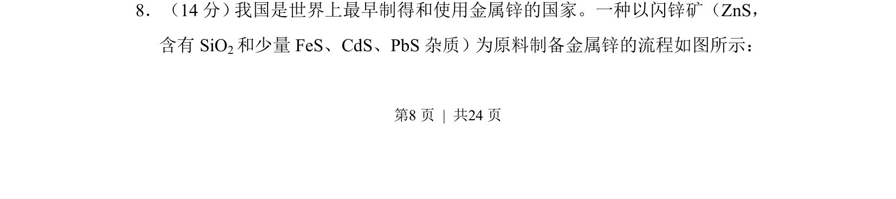
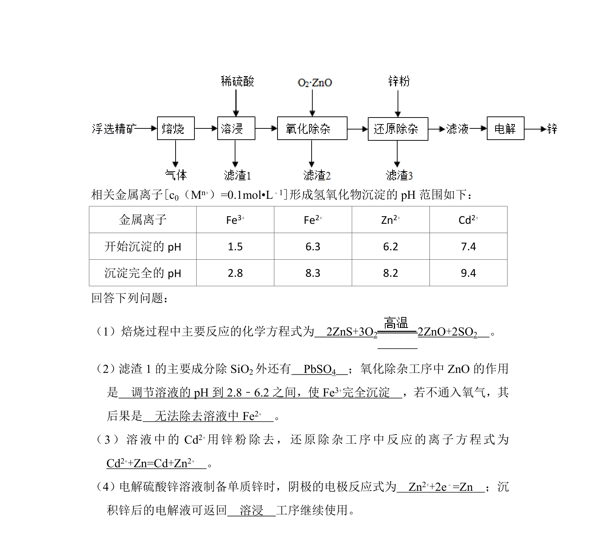
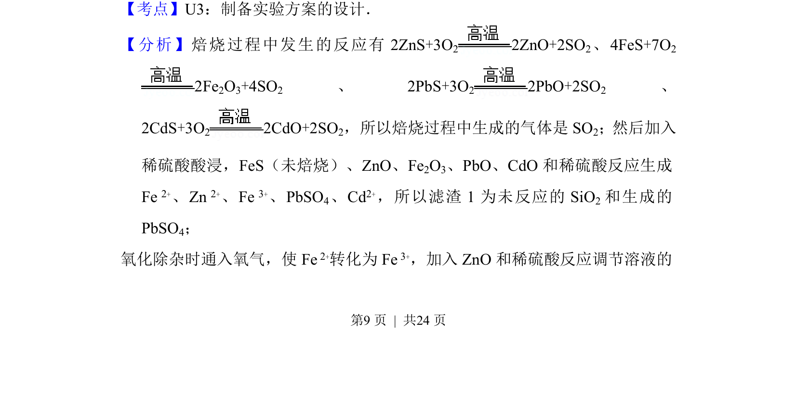
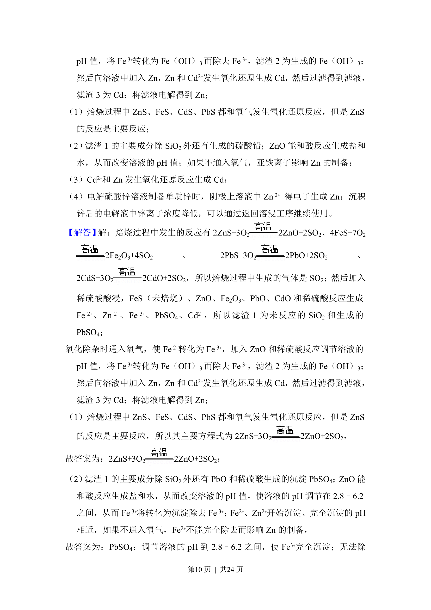
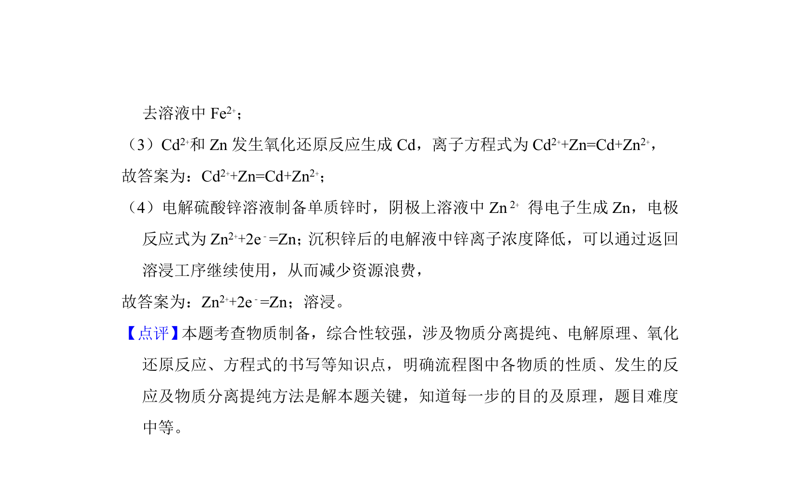

考点：化学流程分析 元素化合物性质 反应原理 实验操作


该题考查化学工艺流程分析，涉及闪锌矿制备金属锌的分离与提纯步骤。



📄 原 PDF 第 8 页：
素材/真题/吉林/2008-2024·（吉林）化学高考真题/2018年高考化学试卷（新课标Ⅱ）（解析卷）.pdf
8．（14分） 我国是世界上最早制得和使用金属锌的国家。一种以闪锌矿（ZnS， 含有SiO 2和少量FeS、CdS、PbS杂质）为原料制备金属锌的流程如图所示：